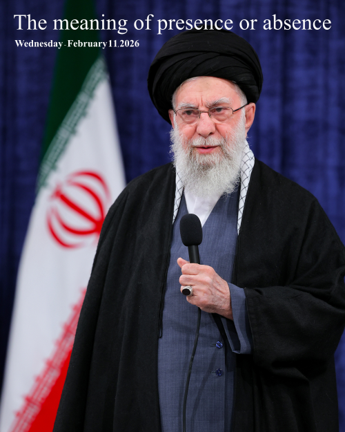

The Meaning of Presence and Absence on 22 Bahman
Date: 22 Bahman 1404 Solar Hijri (equivalent to February 11, 2026 Gregorian)
Today is 22 Bahman 1404, and yesterday the Leader of the Islamic Revolution invited the people to participate in the march.
I think it's a good opportunity to respond publicly to this invitation and say a few words. Of course, many issues in past years I raised privately through official letters to the Leader's website, but they didn't even assign anyone the size of a mobile operator to respond to the people, and no response was received. This shows the value of the people in his view, and they consider the existence of the people only necessary for sanctification, takbir, and reverence. Certainly, a simple operator or company follows up more on a request or complaint, values it, and even sees a request or complaint as an opportunity for promotion and explanation.
Because I am the son of two clerics affiliated with the ruling system, and I myself am involuntarily and indirectly affiliated with this system—both from the family side and from the system side—my absence from any movement that confirms the legitimacy of the system is misinterpreted and distorted, and usually they start character assassination in their minds and create an unreal personality of individuals. From someone who does not put the stamp of approval on the legitimacy of this system. And the procedure is also such that first they make the environment unsafe with words and language, and then under this cover, they operationally create insecurity. This text and response is to distance myself from that hypothetical and fabricated character of theirs that is being promoted.
Mr. Ayatollah Khamenei and family, and whoever else officially gives legitimacy to this system and invites me to give legitimacy:
You say that we can implement the Velayat-e Faqih and the Islamic system to an acceptable extent, and you, as a Shia Muslim and an Iranian, give us this responsibility and legitimacy so that we can build the structure and divide the responsibilities.
My simple response: Every responsibility requires competence, and you are requesting the greatest responsibility. In my opinion, you cannot get a passing grade, and I do not accept the responsibility, support, and giving legitimacy to you. You are asking something from me that you do not have the ability or the least competence for, and certainly you will fail in its execution. Perhaps in words or on paper it is very epic and beautiful—like this image of the Leader of the Revolution—and flawless, the large part of which is related to the use of sacred things rather than a record that I, as the legitimacy giver, am obliged to grade.
Therefore, my absence from the marches and elections in recent years means not giving legitimacy, lack of competence, and also lack of support for you in implementing the Velayat-e Faqih and the government and Islamic system, which requires ability and competence that you are very far from. In addition, the important and noteworthy point is that this great distance and the inability to execute properly and acceptably has created and will create major, deep, and sensitive security problems for the people of Iran and the people of the world. And I consider it my duty to stop giving legitimacy and not accompany. Of course, after receiving many privileges and supports from us and greatly neglecting legal duties.
And personally, if I confirm legitimacy and accompany, I will have no answer before the people of Iran and even the people of the world, and most importantly, Almighty God. And woe to the day when a small creature stands helpless and without answer before a great Creator.